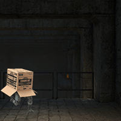
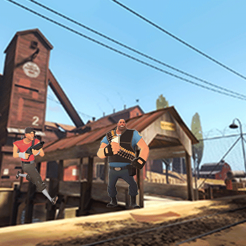

<!DOCTYPE html>
<html lang="en">
    <head>
        <meta charset="UTF-8" />
        <title>Title</title>
    </head>
    <body style="background-color: #275506"></body>
</html>

<html lang="en">
<head>
  <meta charset="UTF-8">
  <meta name="viewport" content="width=device-width, initial-scale=1.0">
  <title>My Portfolio</title>
  <style>
    body {
      font-family: Arial, sans-serif;
      margin: 0;
      line-height: 1.6;
    }
    header {
      background: #275506;
      color: darkgoldenrod;
      padding: 1rem;
      text-align: center;
    }
    nav {
      background: #8d6925;
      
    }
    nav ul {
      list-style: none;
      margin: 0;
      padding: 0;
      display: flex;
      flex-wrap: wrap;
      justify-content: center;
    }
    nav ul li {
      margin: 0.5rem;
    }
    nav ul li a {
      color: #47f214;
      text-decoration: none;
      padding: 0.5rem 1rem;
      background: #5c560f;
      border-radius: 4px;
      transition: background 0.3s;
    }
    nav ul li a:hover {
      background: #b2a60b;
    }
    main {
      padding: 2rem;
    }
    section {
      margin-bottom: 2rem;
    }
    footer {
      background: #275506;
      color: darkgoldenrod;
      text-align: center;
      padding: 1rem;
    }
  </style>
</head>
<body>
  <header>
    <h1 style="font-family: serif">Joshua's Portfolio</h1>
    <p style="font-family: serif;font-size: x-large">ART2602C Introduction to Digital Studio Online / Fall 2025</p>
  </header>

  <nav>
    <ul style="font-family: serif">
      <li><a href="final%20portfolio%20pixelated.html">Pixelated</a></li>
      <li><a href="final%20portfolio%20bad%20photoshop.html">Bad Photoshop</a></li>
      <li><a href="final%20portfolio%20perfect%20mask.html">Perfect Mask</a></li>
      <li><a href="final%20portfolio%20home.html">Home Page</a></li>
      <li><a href="final%20portfolio%20glitch%20grit.html">Glitch and Grit</a></li>
    </ul>
  </nav>

  <main style="background-color: rgb(227, 215, 192)">
    <section id="gifs">
      <h2 style="text-align: center; color: darkgoldenrod;font-family: serif">Animated GIFs</h2>
      <p style="color: darkgoldenrod; font-size: x-large;font-family: serif;text-align: center">The Animated GIFs
      assignment is as simple as the name. To make animated GIFs. Otherwise known as "Graphics Interchance Format,"
      GIFs are the imagery you see that have animation. Here's some of mine below.</p>
            <h2 style="text-align: center; color: darkgoldenrod;font-family: serif">Animated GIFs of Popular Media</h2>
      
      
      <h2 style="text-align: center; color: darkgoldenrod;font-family: serif">Technical Notes</h2>
      <p style="color: darkgoldenrod; font-size: x-large;font-family: serif;text-align: center">
        Adobe Photoshop was used to create the GIFs. Imagery obtained from Google.</p>
       <h2 style="text-align: center; color: darkgoldenrod;font-family: serif">Process Documentation</h2>
      <p style="color: darkgoldenrod; font-size: x-large;font-family: serif;text-align: center">
        The GIFs were constructed in two different ways. The top one was the most simple one as I recall it to
      be a tween animation. All I did was move the box from one side to the other and the movement works all on it's
      own. The bottom one was a bit more complex, as I had to creat and edit each frame as the movement from the Scout 
        (guy with gun) was more complex than a simple glide. There was also the muzzle flash to add
      in coming out from the gun. Plus.. the poor heavy dying before eating his sandwich...</p>
       <h2 style="text-align: center; color: darkgoldenrod;font-family: serif">Reflection</h2>
      <p style="color: darkgoldenrod; font-size: x-large;font-family: serif;text-align: center">I think I had the
      most fun with this assignment out of all the projects. I'm quite the video gamer and fans of both series,
      so being able to create something light-hearted and fun for the class while sticking to my likes was
      pleasurable. That said, the actual creation of the GIFs, even the simple box one, was difficult even after
      watching the tutorials. There was a lot of conflictions and parameters to adjust, especially with the bottom
      complex one as initially I couldn't get each frame to not lock in the same rotation as the others. The box
      GIF was supposed to tilt left and right during the movement but I was unable to achieve that so he just moves
      in a straight line. Considering my preferences, I probably won't be using tween in the future and stick to
      the method I used with the bottom GIF.</p>
    </section>

    

  </main>

  <footer>
    <p>&copy; 2025 Joshua's Portfolio</p>
  </footer>
</body>
</html>
